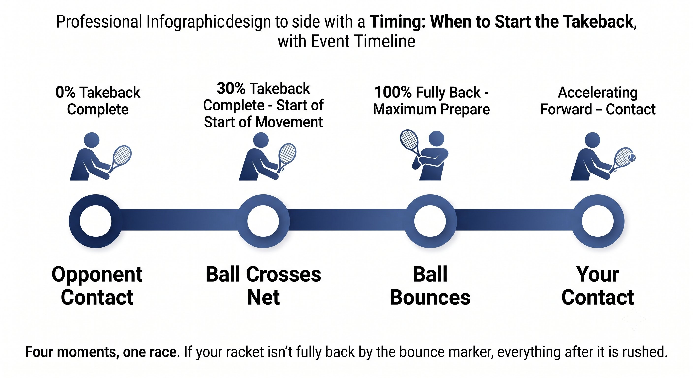

Chương 5: Kho Năng Lượng¶
Độ Dài Kéo vợt ra sau, Động Tác Đưa Vợt Lên Cao Ra Sau, và Thời Điểm¶
Vung nạp không phải là phong cách. Đó là kho chứa năng lượng, được định cỡ theo đúng thời gian bạn thực sự có.
Độ lớn của Kéo vợt ra sau quyết định bạn có bao nhiêu thời gian để gia tốc. Bóng càng nhanh, Kéo vợt ra sau càng ngắn. Đó là vật lý, không phải sở thích.
— Henry Phạm

Hình 5.1
Nguyên Lý Cốt Lõi: Kéo vợt ra sau Là Kho Chứa Năng Lượng¶
Vung nạp có hai chiều, và cùng nhau chúng quyết định bạn có thể nạp và giải phóng bao nhiêu năng lượng:
– Độ dài — vợt đi ra sau bao xa. Càng dài, quãng đường để gia tốc càng dài, và tiềm năng tốc độ càng cao.
– Động Tác Đưa Vợt Lên Cao Ra Sau — hình dáng theo chiều dọc của cú Kéo vợt ra sau. Đưa Vợt Lên Cao Ra Sau cao mang lại trợ lực từ trọng lực và độ căng vai; Đưa Vợt Lên Cao Ra Sau phẳng thì gọn và nhanh hơn.
Nguyên Lý Cốt Lõi¶
Vung nạp là pha eccentric — pha nạp năng lượng — của chu kỳ căng-rút. Không nạp nghĩa là không có phản hồi đàn hồi, và không có phản hồi đàn hồi nghĩa là không có công suất miễn phí.

Hình 5.2
Quy Tắc Vàng: Tốc Độ Bóng Đến Quyết Định Kích Cỡ Kéo vợt ra sau¶
Đây là quy tắc bị vi phạm nhiều nhất trong tennis phong trào.
Quy Tắc¶
Bóng đến càng nhanh, Kéo vợt ra sau càng ngắn. Luôn luôn như vậy. Không có ngoại lệ.
Mẹo Huấn Luyện¶
Hãy quan sát người chơi phong trào đối mặt một cú giao bóng nhanh: họ Kéo vợt ra sau rất to và bị kẹt bóng. Còn một tay vợt chuyên nghiệp đối mặt cùng cú giao bóng đó: vai xoay, vợt vào vị trí, gần như không hề có Kéo vợt ra sau ngược ra sau. Chính trái bóng đang cung cấp năng lượng — bạn chỉ việc chuyển hướng nó.

Hình 5.3
Ba Loại Kéo vợt ra sau¶
Hãy khớp loại Kéo vợt ra sau với những gì tình huống thực sự cho phép bạn.
Động Tác Đưa Vợt Lên Cao Ra Sau Quan Trọng: Đưa Vợt Lên Cao Ra Sau Cao So Với Đưa Vợt Lên Cao Ra Sau Phẳng¶
Hình dáng theo chiều dọc của Kéo vợt ra sau làm thay đổi cách năng lượng đi vào hệ thống.
Quy Tắc¶
Đưa Vợt Lên Cao Ra Sau cao cho bạn trợ lực từ trọng lực và mức nạp chu kỳ căng-rút tối đa, nhưng nó cần thời gian. Đưa Vợt Lên Cao Ra Sau phẳng thì nhanh nhưng lưu trữ ít năng lượng đàn hồi hơn. Hãy khớp Động Tác Đưa Vợt Lên Cao Ra Sau với thời gian bạn thực sự có.

Hình 5.4
Chuỗi Đưa Vợt Lên Cao Ra Sau → Rơi → Vung¶
Mọi Kéo vợt ra sau có Đưa Vợt Lên Cao Ra Sau đều đi qua ba pha, và chúng phải chảy vào nhau không hề ngắt quãng.
Quy Tắc¶
Pha rơi phải chảy thẳng vào cú vung tiến. Bất kỳ khoảng nghỉ nào ở đáy Đưa Vợt Lên Cao Ra Sau cũng khiến năng lượng của chu kỳ căng-rút tiêu tán thành nhiệt. Bạn có chưa đầy 0.2 giây để thực hiện bước chuyển đó.
Mẹo Huấn Luyện¶
Cái "khựng lại" chính là kẻ giết công suất số một ở trình độ phong trào. Người chơi Kéo vợt ra sau vợt lên, dừng lại ở đỉnh để "ngắm", rồi dùng cơ bắp để vung tiến. Cách sửa: giữ Đưa Vợt Lên Cao Ra Sau, rơi, và vung như một chuyển động liên tục, không suy nghĩ gì ở đáy. Hãy cho Quiet Eye "đỗ" sớm để không còn nhu cầu ngắm vào phút chót — thứ khiến bạn muốn dừng lại.

Hình 5.5
Thời Điểm: Khi Nào Bắt Đầu Kéo vợt ra sau¶
Bắt đầu Kéo vợt ra sau đúng lúc là yếu tố quyết định tất cả.
Nguyên Lý Cốt Lõi¶
Vung nạp của bạn phải hoàn tất trước khi bóng nảy ở phần sân của bạn. Lượt nảy là tín hiệu "đi" cho cú vung tiến — không phải tín hiệu để bắt đầu Kéo vợt ra sau.
Mẹo Huấn Luyện¶
Hãy luyện tập cùng đối tác bắn bóng. Nói "xoay" khi bóng qua lưới, "nảy" khi nó chạm đất, "đánh" tại thời điểm tiếp xúc. Nếu bạn vẫn đang đưa vợt ra sau lúc nói "nảy", Kéo vợt ra sau của bạn đang quá lớn so với tốc độ bóng đó.
Các Lỗi Kéo vợt ra sau Thường Gặp Và Cách Sửa¶
Đây là cách các lỗi thường gặp tương ứng với cách sửa của chúng.
Độ Cao Kéo vợt ra sau Khớp Với Độ Cao Tiếp Xúc¶
Vị trí theo chiều dọc lúc bắt đầu Kéo vợt ra sau nên phản chiếu đúng độ cao bạn dự kiến sẽ gặp bóng.
Quy Tắc¶
Độ cao Kéo vợt ra sau bằng độ cao tiếp xúc. Vợt bắt đầu ở đúng chỗ bóng sẽ được gặp.
Bài Tập: Khớp Kéo vợt ra sau Với Tốc Độ Bóng¶
Bài Tập 1 — Bắn Ba Tốc Độ¶
– Đối tác bắn ba tốc độ: chậm (như lob), trung bình (rally), nhanh (drive).
– Bạn gọi to loại Kéo vợt ra sau trước khi vung: "đầy đủ," "trung bình," hoặc "ngắn."
– Đối tác xác nhận lại: "đúng rồi" hoặc "quá to / quá nhỏ."
– Mục tiêu: chọn đúng loại Kéo vợt ra sau 20 trên 20 lần.
Bài Tập 2 — Shadow Đưa Vợt Lên Cao Ra Sau Liên Tục¶
– Không cần bóng. Kéo vợt ra sau vợt theo hình số 8 liên tục.
– Tập trung: không dừng lại ở đáy Đưa Vợt Lên Cao Ra Sau. Đưa Vợt Lên Cao Ra Sau → rơi → vung phải liền mạch.
– Thêm động tác phanh chân trước ngay khi thoát khỏi hình số 8, rồi tạo một xung lực.
– 20 lần lặp lại. Cảm nhận dòng chảy SSC liên tục.
Bài Tập 3 — Thả, Nảy, Đánh¶
– Thả bóng, để nó nảy, rồi đánh một cú forehand.
– Ràng buộc: vợt phải đã di chuyển về phía trước trước khi bóng đạt đến đỉnh của cú nảy.
– Điều này buộc bạn phải hoàn thành Kéo vợt ra sau sớm — bắt đầu muộn trở nên bất khả thi.
– 10 lần lặp lại mỗi bên.
Vung nạp hoàn tất đúng lúc bóng nảy. Vung tiến bắt đầu ngay tại thời điểm nảy. Thời gian amortization của chu kỳ căng-rút giữ dưới 0.2 giây.
TỐC ĐỘ BÓNG QUYẾT ĐỊNH KÍCH CỠ VUNG NẠP. LƯỢT NẢY BẮT ĐẦU VUNG TIẾN. KHÔNG DỪNG LẠI Ở ĐÁY.
Những Điều Cần Nhớ¶
– Khớp độ dài Kéo vợt ra sau với tốc độ bóng đến (xem bảng ở trên).
– Hoàn tất Kéo vợt ra sau trước khi bóng nảy ở phần sân của bạn.
– Không dừng lại ở đáy Đưa Vợt Lên Cao Ra Sau — giữ Đưa Vợt Lên Cao Ra Sau, rơi, và vung chảy thành một chuyển động duy nhất.
– Khớp độ cao Kéo vợt ra sau với độ cao tiếp xúc bạn dự kiến.
– Xoay người trước, để vợt đi theo sau — đừng chỉ đưa tay ra sau một mình.
– Kiểm tra bằng video: dừng hình đúng lúc bóng nảy. Vợt đã hoàn toàn ra sau chưa? Nếu chưa, bạn đang muộn.
Chương Này Dẫn Đến Đâu¶
Chương này thiết lập biến số NĂNG LƯỢNG — tốc độ bóng đến quyết định Kéo vợt ra sau — trong hệ thống Q-V-ROOT-8-45-Impulse-Jin CORE. Chương 6 sẽ nói về độ căng cơ: hệ thống truyền dẫn cho phép năng lượng bạn vừa nạp được thực sự đến được với trái bóng.
←Chương TrướcChương 4: Kết QuảChương TiếpChương 6: Hệ Truyền Động→